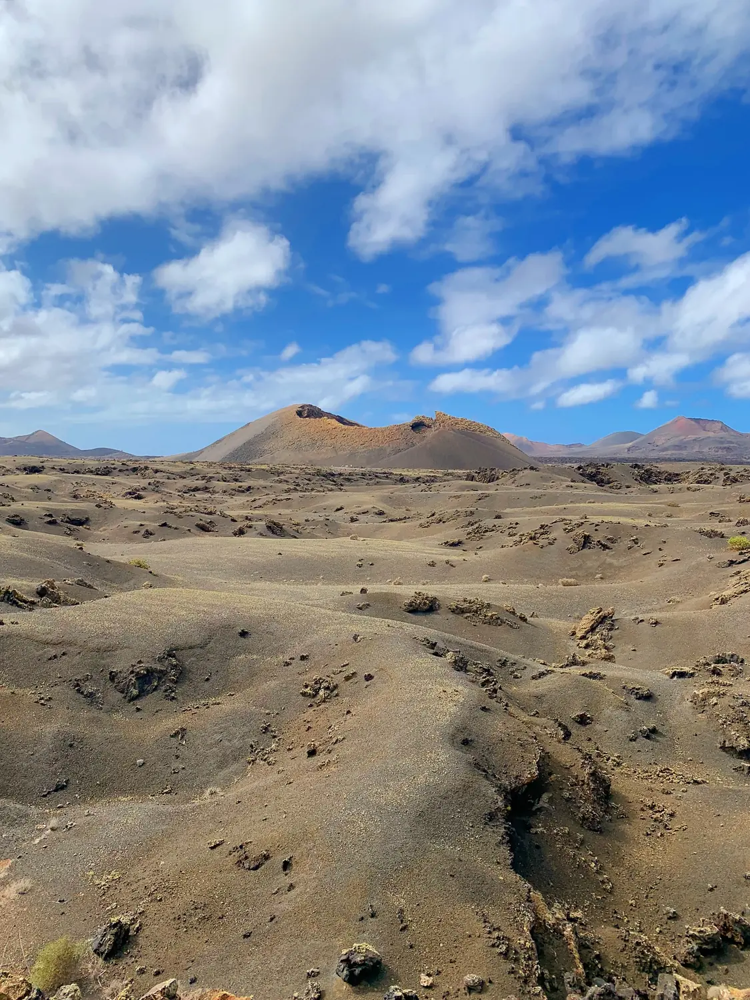
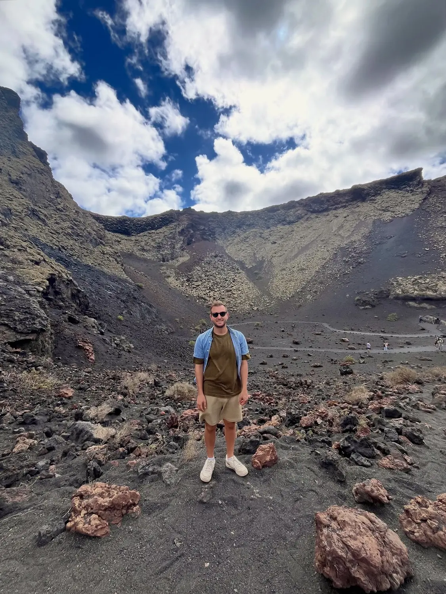

The highlight01
Timanfaya & the Fire Mountains
📍 Timanfaya National Park · southern Lanzarote
This is the one you come for. Timanfaya is a sea of black lava fields, ochre cones and craters left by 18th-century eruptions — the closest thing to standing on another planet we've ever experienced. The park itself is protected, so you explore the core on an official coach route, and there are guided half-day tours and even a hike across the volcanic landscape. The national park is a must; don't skip it.
Feels like MarsBook the park tour
GetYourGuide
We'd recommend